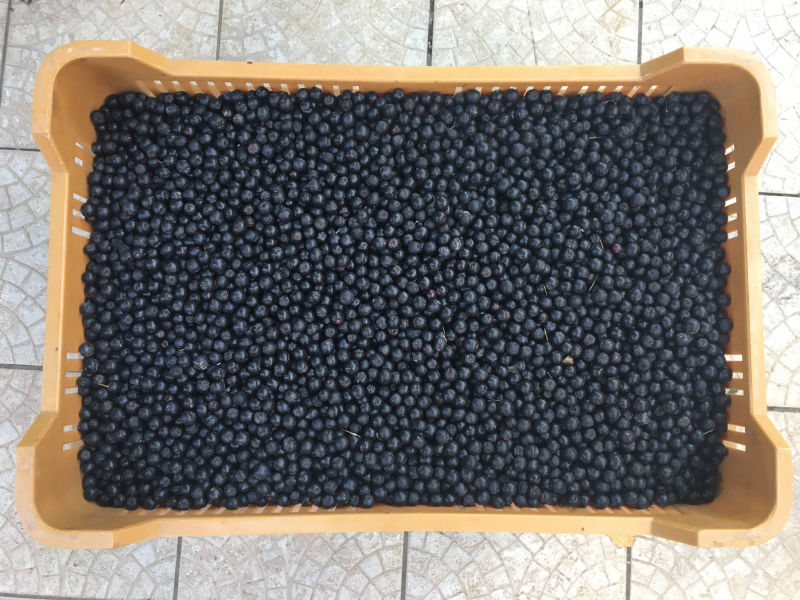
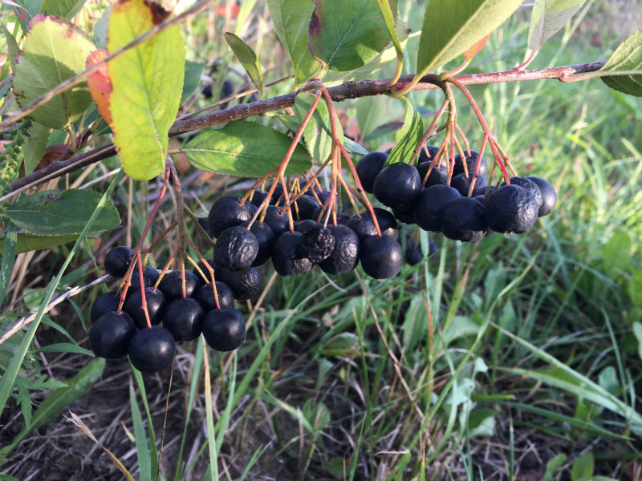
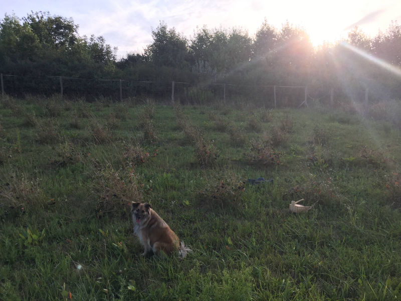
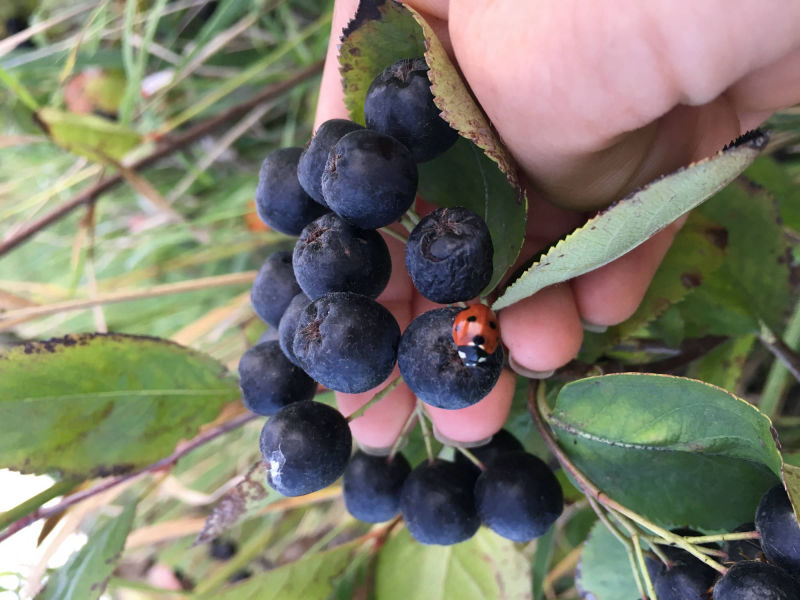
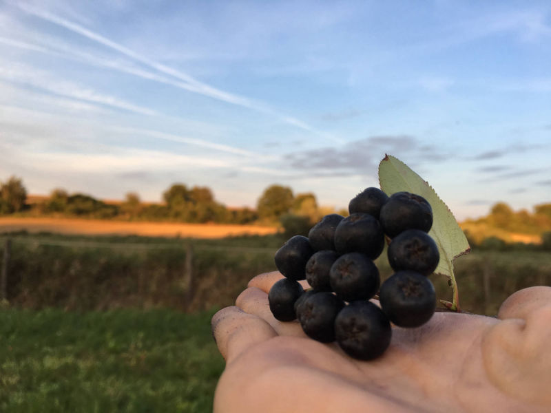
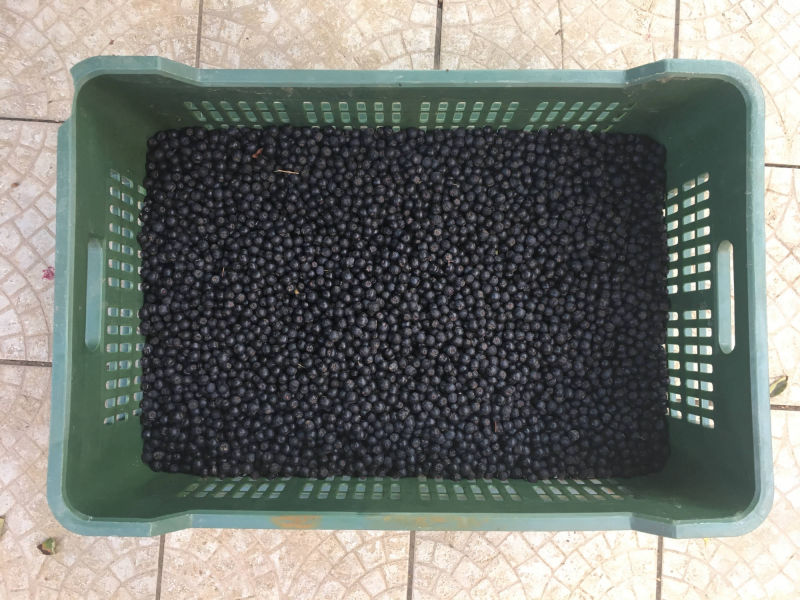

A fekete berkenye (Aronia melanocarpa) kicsi, fényes, feketés alapszínű gyümölcske a mi hazánkban méltatlanul elfeledett. Tulajdonképpen az almatermésűek közé tartozik. Sokan tartják nyersen fogyasztásra alkalmatlannak, pedig nincs igazuk. Csak más. Először egy kicsit savanykásan édes a végén egy kicsit fanyar. Éretten kell megkóstolni. Nálunk augusztus második felétől érik meg kellően. Érett bogyója vitaminokban és ásványi anyagokban hihetetlenül gazdag. Élettani hatása kiemelkedő. Nem véletlen, hogy a körülöttünk lévő országok lakói (szerbek, oroszok, szlovénok, lengyelek, osztrákok, de a skandináv népek és a németek) körében ismert és elismert gyógynövény, nemcsak gyümölcsként fogyasztják. Azt olvastuk, hogy az osztrákok a berkenye pálinkát gyógyszerként fogyasztják. Sőt, kialakult kultusza van, fesztiválokat is rendeznek,ahol minden a fekete berkenye körül forog. Szerencsére az egyre tudatosabban táplálkozók körében már nálunk is kezdik megismerni és megszeretni nemcsak a belőle készült leveket, lekvárokat, teákat, szárított gyümölcsöket, hanem magát a nyers gyümölcsöt is. A fent említett országok sokoldalúan használják már: természetes ételszínezőként, a tejiparban joghurtokat színeznek és ízesítenek vele, az édesipar, kozmetikaipar is hasznosítja, sőt bébiételekbe is csempésznek belőle, nyilván kitűnő élettani hatásai miatt. Ők már előttünk járnak.
Mert a fekete berkenye GYÓGYNÖVÉNY. Elsősorban természetes immunerősítő és gyulladáscsökkentő hatása az, amelyik kiemelte az egyszerű
gyümölcsök köréből. Számos betegség megelőzésében játszik igazoltan szerepet. Kiemelkedő a sejtvédő
hatása (az antocianin tartalma megelőz minden más gyümölcsöt). A második legmagasabb C vitamint
tartalmazó gyümölcs, ezért is hasznos nyers fogyasztása. A feldolgozott termékek is jótékonyan
támogatják a szervezet működését, megőrzik vitalitását, pozitív hatással vannak egész testünkre, beleértve
az idegrendszert is. Gyerekeknek, fiataloknak, aktívan dolgozóknak, munkában megfáradtaknak,
időseknek egyaránt ajánlott. Rendszeres fogyasztása segít a vérkeringés javításában, hatékony méregtelenítő,
értágító, segít a vércukorszint beállításában kiegészítő kezelésként.
Saját tapasztalat: Napi kétszer (reggel, este) felhörpintett fél dl natúr 100%-os lé csípőízületi gyulladásra igen jótékony
hatású. Már két hét után jelentős változás tapasztalható, a fájdalom csökkent, szinte elmúlt.
Nyersen a legjobb, ugyanis vitamin és tápanyagtartalma ekkor a legmagasabb :) Savanykás, fanyar íze miatt viszont feldolgozott termékként kelendőbb. A feldolgozott termékek is jótékonyan támogatják a szervezet működését, megőrzik vitalitását, pozitív hatással vannak egész testünkre, beleértve az idegrendszert is.
Elsősorban azért, mert alig hallottunk róla. A neten böngészve bukkantunk rá. Sok mindent
elolvastunk róla, és alig akartuk elhinni, hogy létezik egy olyan gyümölcstermő növény, ami elsősorban
gyógynövény rengeteg pozitív élettani hatással, mégis szinte ismeretlen nálunk. Úgy gondoltunk,
belevágunk. Ha csak a család étrendjébe sikerül belecsempészni, már megérte. Sajnos a termesztésére
vonatkozva igen kevés információt találtunk, de próba, szerencse. Abban viszont minden fellelhető
szakirodalom egyetértett, hogy mivel kevésbé ismert hazánkban, nincs számottevő kártevője és
kórokozója, tehát nagyszerűen beilleszthető lehet a bio termesztésbe. Immár két éves tapasztalatunk
alapján ez a növény tényleg nem igényel semmilyen vegyszeres védekezést.
Családi gazdaságunk 2015-ben alakult, de korábban is foglalkoztunk mezőgazdasággal,
elsősorban szántóföldi növények termesztésével. Területeink Baranya megye dimbes-dombos részein
találhatók, amik igen megnehezítik a földművelést. Évek óta okozott problémát Szemely községben egy
közel fél hektárnyi terület, ami nehezen megközelíthető. Ide kerestünk hasznosítási
lehetőséget amire a fekete berkenye ültetvény végül megoldást adott.
KÖVESS MINKET!